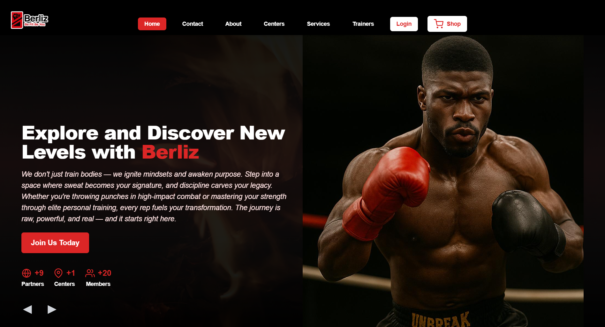

<section id="berliz" class="bg-light-gray py-20 font-sans text-rich-black">
    <div class="container mx-auto px-6">
        <!-- Section Header -->
        <header class="text-center mb-12">
            <h2 class="text-3xl md:text-4xl font-extrabold text-lemon-blue">Berliz</h2>
            <div class="w-24 h-1 bg-lemon-blue mx-auto mt-2 rounded-full"></div>
        </header>

        <!-- Featured Image and Content -->
        <div class="grid grid-cols-1 lg:grid-cols-2 gap-12 items-center">
            <!-- Image Column -->
            <div class="flex justify-center">
                
            </div>

            <!-- Content Column -->
            <div class="text-base md:text-lg text-gray-700 space-y-4">
                <h3 class="text-2xl font-semibold text-center text-dark-blue">
                    Revolutionizing Fitness: The Berliz Platform
                </h3>

                <p>
                    Berliz represents the intersection of my passion for fitness and web development. It's a platform
                    built to
                    change the way people engage with fitness. Developed with <span class="font-semibold">Angular</span>
                    for the
                    front-end and <span class="font-semibold">Spring Boot</span> for the back-end, Berliz offers a
                    seamless
                    experience to connect users with trainers, gyms, and fitness resources.
                </p>

                <p>
                    This project focuses on scalability and a user-friendly experience, featuring real-time
                    communication, user
                    profiles, and a robust search function to help users find the right fitness services. With a
                    responsive design,
                    it’s accessible on any device, ensuring fitness is just a click away.
                </p>

                <p>
                    Building Berliz gave me the opportunity to work on a full-stack solution, integrating intuitive
                    UI/UX flows
                    with complex server-side functions. As Berliz evolves, I continue to enhance it with new features to
                    empower
                    users on their fitness journey.
                </p>

                <!-- Action Button -->
                <div class="flex justify-center">
                    <a href="https://berliz.fitness" target="_blank">
                        <button
                            class="bg-lemon-blue text-white py-2 px-8 rounded-2xl font-semibold shadow-md hover:shadow-lg transition-all">
                            Explore Berliz
                        </button>
                    </a>
                </div>
            </div>
        </div>
    </div>
</section>